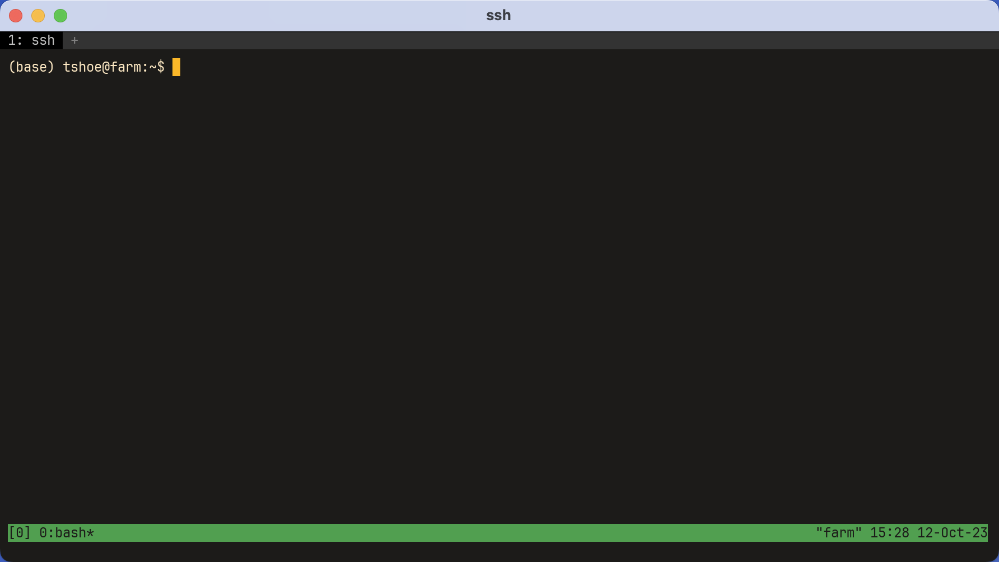
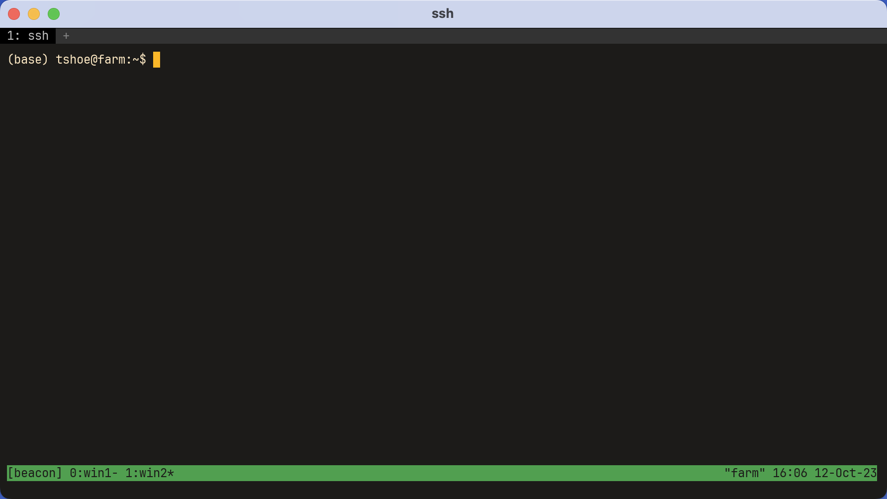
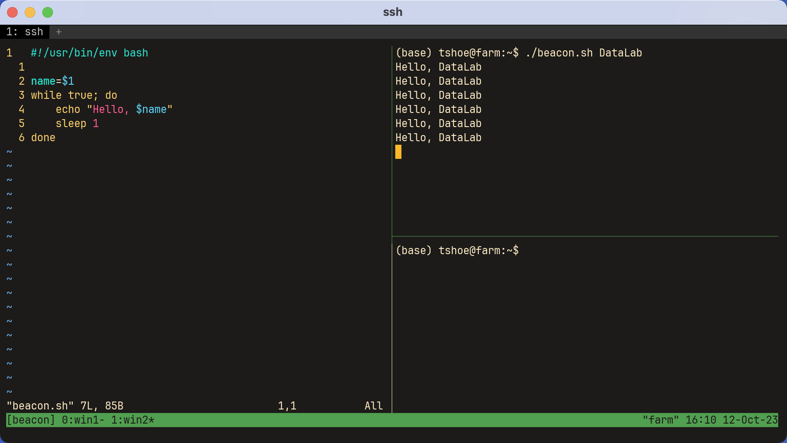
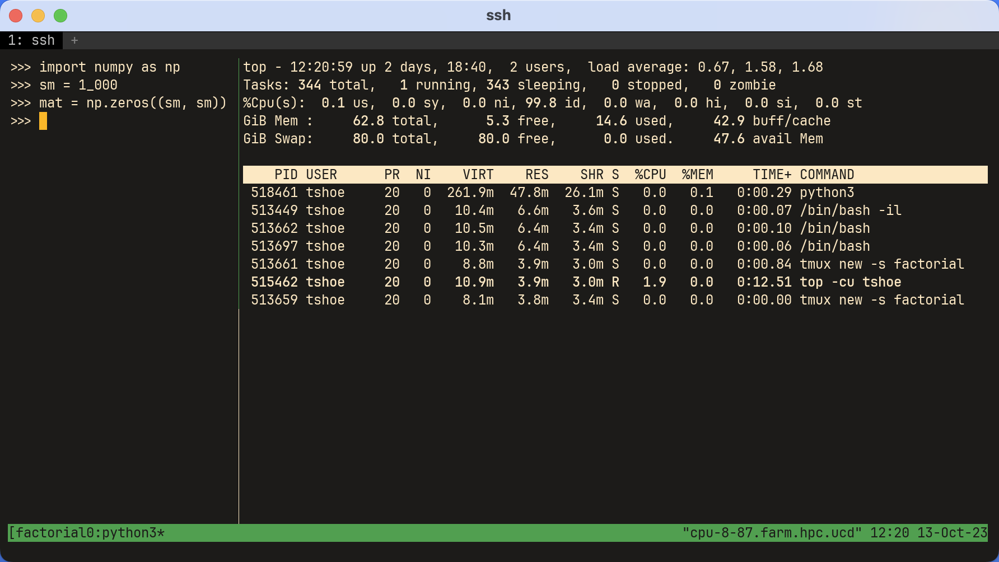
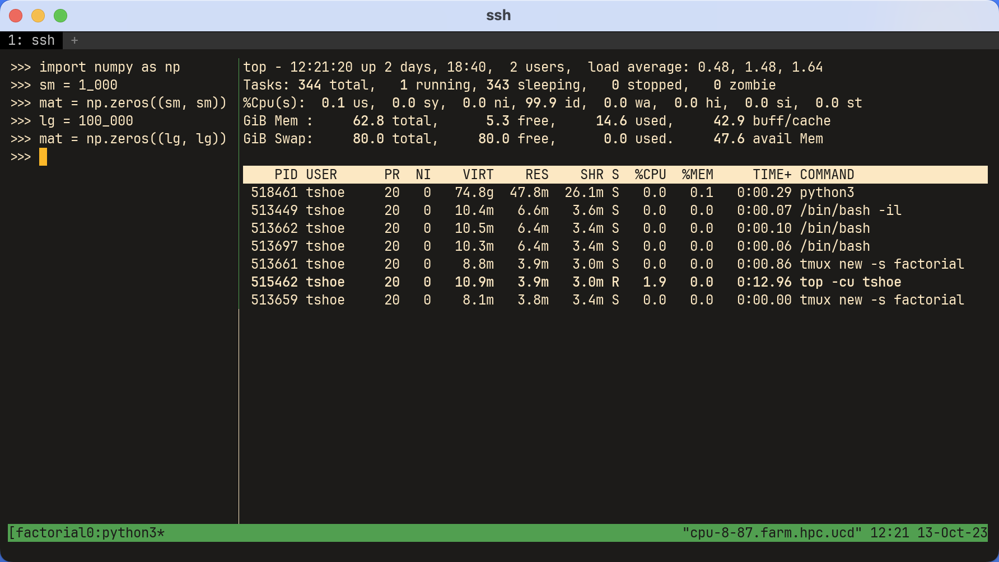

2. Running Scripts#
This chapter will show you how to write and run scripts on the command line. Scripts are like recipes, which your computer follows to complete a task. They’re essential for automating workflows, working on remote systems, scaling processes, and doing reproducible research. In addition to writing and running scripts, this chapter will show you how to manage terminal sessions and monitor processes so that you can successfully do your work.
Learning Goals
Write and run executable scripts from the command line
Explain what processes, process groups, sessions, and terminals are
Use a terminal multiplexer (
tmux) to create multiple persistent sessionsUse various utilities (
ps,top,htop) to monitor and manage processes and jobs as they runIdentify resource usage and related system information
Estimate the resources required to execute your code
2.1. Executable Scripts#
Executable files contain a set of instructions that your computer interprets and follows to perform a task. Here, “instruction” covers a wide scope of formats: certain files contain machine or binary code, while others contain human-readable code written in C++, Python, or R. Many executable files are pre-compiled binaries that can be run directly; some (like C++) must be compiled before they can be run; and a final group are interpreted files written in high-level scripting languages (like Python and R), which require an external program to run.
This chapter focuses on the third group of files: executable scripts.
2.1.1. Using an Executable Script#
Using an executable script works very similarly to using command line programs
like ls, grep, etc.: scripts have names and some can take optional
arguments. The biggest difference is that there is no preset interpreter
for your script. Unlike most command line programs, which are precompiled
binaries, you need to execute your script by specifying a program to interpret
it.
At a high level, that looks like the following:
<interpreter> <script> <arg1, arg2, arg3, ...>
Components
Interpreter: a program that interprets and executes instructions written in a script; common examples include Bash, Python, and R
Script: a plaintext file that contains your code; typically its file extension hints at the kind of instructions it contains
Arguments: extra commands that change the behavior of your script, point it to specific resources, etc.
In practice, the above might look like so:
python script.py input.txt output.csv
2.1.2. Shebangs#
It is, however, possible to execute a script without specifying the
interpreter from the command line. Simply prepend the script with ./:
./<script> <arg1, arg2, arg3, ...>
But this requires inserting a shebang into the script. A shebang is a special type of comment that tells your computer how it should interpret the contents of a script. If you do not include one, your computer will default to using your shell interpreter (typically Bash or Zsh) to parse the script. As you might imagine, if you wrote your script in Python or R, this will throw errors.
Shebangs always go on the first line of a script. They begin with #!; this
sequence is followed by an absolute path to your interpreter and any optional
arguments.
#!</path/to/interpreter> <arguments>
Often you’ll have several interpreters to choose from (different versions of
Python, for example). Technically there’s no constraint on what you choose, but
it’s usually best to let your env command direct your computer to whatever
interpreter is in your current environment. This is especially important when
you’ve copied a script onto a remote computer, where the path configuration may
be different than the one on your own.
The following examples use env to implement a shebang for Bash, Python, and R:
#!/usr/bin/env bash
#!/usr/bin/env python
#!/usr/bin/env Rscript
This will direct your computer to use the environment variables set in env.
2.1.3. Example Script#
Now that you know the anatomy of an executable script, you can write one
yourself. There are three versions of such a script below, one for Bash,
Python, and R, respectively. The script, beacon.{sh,py,R}, accepts one
argument from the command line, name. It then prints Hello, {name} to
screen in an indefinite while loop, waiting for one second after each
iteration.
#!/usr/bin/env bash
name=$1
while true; do
echo "Hello, $name"
sleep 1
done
#!/usr/bin/env python
import sys
import time
def main():
name = sys.argv[1]
while True:
print(f"Hello, {name}")
time.sleep(1)
if __name__ == "__main__":
main()
#!/usr/bin/env Rscript
args = commandArgs(trailingOnly=TRUE)
name = args[1]
while (TRUE) {
cat(paste("Hello", name))
Sys.sleep(1)
}
2.1.4. File Permissions#
To use your script (in this case, the Bash version), call it from the command line:
./beacon.sh DataLab
bash: permission denied: ./beacon.sh
This will very likely throw an error. The default file permissions for creating new files on your computer typically do not include allowing that file to be executed. This is to protect against users unwittingly running malicious code from a third-party (including, potentially, other users on a computer).
To inspect the file permissions for beacon.sh, use ls -l:
ls -l beacon.sh
-rw-r--r-- 1 datalab datalabgrp 85 Oct 12 13:30 beacon.sh
We’re interested in the first part, -rw-r--r--. These are called permission
bits. They determine whether a file has permission to be:
r: readw: writtenx: executed
The first bit in this sequence designates whether something is a directory, symlink, or a file. The next nine parts designate who has what permissions, using three bits for each to flag this:
-:beacon.shis a filerw-: the user (datalab) who created it can read and write itr--: other users in this user’s group (datalabgrp) can read itr--: users outside that group can also read it
At present, no one is allowed to execute the file. But the command line program
chmod can change this. There are two ways to use chmod. One involves
knowing octal permission representations, which are too detailed for
this session; instead, using the symbolic representation of r, w, and x
will suffice.
To give a file execute (x) permissions, type the following:
chmod u+x beacon.sh
Above, u+x adds “executable” to beacon.sh. Note that it only does so for
the original user (u).
ls -l beacon.sh
-rwxr--r-- 1 datalab datalabgrp 85 Oct 12 13:30 beacon.sh
With this done, the script may be executed:
./beacon.sh DataLab
Hello, DataLab
Hello, DataLab
Hello, DataLab
Hello, DataLab
...
2.2. Managing Multiple Sessions#
With no control flow to specify when the script should stop, beacon.sh will
run indefinitely. While this is a toy example, which is easily stopped by
typing Ctrl+c, there are many instances where you might write a script with
the intent of having it run for a long time. Fitting a big model is one
example; or perhaps you have a big file to download instead. Keeping your code
running requires you to keep the session in which you started your script
running as well. Importantly, in Unix-speak, a session is not the same thing
as your terminal. The latter is what you use when you interact with your
computer via the command line. By contrast, a session is created when you log
in (start interacting) and it persists until you log out (stop interacting). It
is comprised of a collection of processes. Each process is dedicated to a
separate program in your session.
Every time you open your terminal, you start a session. Various processes start
as well; you start others whenever you interact with the command line. Closing
your terminal (even unintentionally, as in the case of a lost internet
connection) terminates all processes associated with a session, including those
that are still running. That would “kill” beacon.sh. In this instance there’s
no harm in that, but if you have a script that you want to run for multiple
hours, or even days, you will need a way to keep your session alive. One way to
do this is with a terminal multiplexer. Multiplexers are applications that
enable you to run one or more sessions at the same time and keep those sessions
alive for as long as you’d like.
2.2.1. The Basics of tmux#
The two most popular multiplexers are screen and tmux. Most computers will
come with one or both of these applications installed, though you can also
install them separately with a package manager like Pixi or even Homebrew. This
chapter will show you the basics of tmux. It’s a little more featureful than
screen and it fits nicely with other work patterns associated with programs
like vim.
Using tmux with conda on macOS
On macOS, tmux runs a path-building utility that can interfere with active
conda environments. To fix this, you’ll need to do a further bit of
configuration.
First, determine which shell you are using:
echo $SHELL
If you see /bin/zsh, create a new file in your Home directory:
touch ~/.zprofile
If you see /bin/bash, create a slightly different one:
touch ~/.bash_profile
Open the file (either .zprofile or .bash_profile) and enter the following:
if [[ ! -z "$TMUX" ]]; then
PATH=""
eval `/usr/libexec/path_helper -s`
fi
This will flush your path when tmux initializes and rebuild it so that conda
is where it should be.
Save and exit. You should be set!
To start tmux, simply type it in your command line:
tmux

You are now in a window, which sits inside a screen. It looks the same as
your regular terminal view, except for a new bar at the bottom. Note the
number: [0]. This means you are working in your first session.
Within your window, start beacon.sh:
./beacon.sh DataLab
Hello, DataLab
...
That will kick off the script, which you’ll leave running. But since the script
is running, you can’t type any further commands into your terminal itself.
Instead, you’ll need to type a special sequence, or keybinding, to
communicate with tmux. Default keybindings in tmux start with the sequence
Ctrl+b. You’ll always type these two keys before specifying what you want the
program to do.
In this case, you want to leave, or detach, your session so that you can do
more work while the code continues to run. The sequence you’ll type is Ctrl+b d. Doing so should bring you back to your original terminal view, where you’ll
see the following:
[detached (from session 0)]
Detaching from the session will keep it alive but change the screen you’re
viewing. You can go about your work and leave beacon.sh running. If you’d
like to check in on it, or terminate the script, enter:
tmux attach -t 0
That is, attach to the target (-t), which in this case is session 0.
Entering this command will bring you back to a screen view that contains the
output of beacon.sh. Use Ctrl+c to stop your script. Then enter the
following to close tmux:
exit
It’s a good idea to name your sessions, rather than relying on their index positions.
tmux new -s "beacon"
The following starts a new session without entering it:
tmux new -ds "not_entered"
In other words, create a new session (-s) named not_entered in a detached
(-d) state.
List your current sessions with:
tmux ls
beacon: 1 windows (created Thu Oct 12 15:43:30 2023)
not_entered: 1 windows (created Thu Oct 12 15:46:07 2023)
Attach to a named session like so:
tmux attach -t "not_entered"
And close a session from your normal terminal view:
tmux kill-session -t "beacon"
Terminate all sessions using:
tmux kill-server
This functionality becomes extremely powerful with remote systems. Using
tmux, you can start a session on a remote computer, kick off a script, detach
from the session, and log off the remote computer altogether. All the while,
the script will continue running until you log in again.
2.2.2. Windows & Panes#
In tmux, a window is not the same thing as a session. The latter is a
container for the former, and you can have multiple windows. Think of them like
tabs in a web browser.
As with sessions, naming windows can be a good idea. The following starts a new
session, beacon, with window win1:
tmux new -s "beacon" -n "win1"
You can enter tmux’s command mode, which you can use to control windows and
other aspects of tmux, by pressing and releasing Ctrl+b, then pressing and
releasing colon (:). If you’ve used vim before, this will feel familiar.
In command mode, tmux will wait for you to type a command and press Enter.
For example, try entering the command to create a new window named win2:
new-window -n "win2"

From now on, we’ll indicate commands that must be entered in tmux command mode
with a leading colon (:). For instance, note that now two windows are listed
in the tmux status bar (the bottom bar), and win2 is active. To switch back
to win1, run:
:select-window -t "win1"
To close win2, run:
:kill-window -t "win2"
You can also use tmux’s keybindings to switch between and close windows quickly:
Keybinding |
Explanation |
|---|---|
|
Create a new unnamed window |
|
Toggle the previous window |
|
Toggle the next window |
|
Select a window by its index position |
|
Close the current window |
Finally, windows can be split into panes. This divides a window into different areas, which can all run different processes. To try this, run:
:split-window -v
…to split the window into two vertical panes. Use -h instead of -v to
split horizontally. The example below is a window with three panes, each of
which is running a different process. As this example indicates, using tmux
in concert with a program like vim can end up acting like a custom
interactive development environment (IDE).

As before, keybindings make creating panes and navigating between them faster:
Keybinding |
Explanation |
|---|---|
|
Do a vertical split |
|
Do a horizontal split |
|
Close the current pane |
|
Move to the pane on the left |
|
Move to the pane on the right |
|
Move to the pane above |
|
Move to the pane below |
This only scratches the surface of tmux. It has much more functionality than
the above, and nearly all of those functions may be configured according to
your preferences. Use the application’s man page to find out more, or consult
a cheat sheet online.
2.3. Monitoring Your Code#
As your work spreads across sessions, windows, and panes, it becomes increasingly necessary to track what is running, and where. In the context of remote computing, tracking your work is not only essential but good etiquette. Resources can be limited, and you want to be sure you aren’t negatively affecting users’ work.
2.3.1. Finding a Process#
Recall that each program runs on its own process. Every time you interact with your computer, you spawn a process, or multiple processes. Your computer assigns a unique process id (PID) to each process, which enables you to monitor and manage it as necessary.
ps will tell you which processes are currently running in a terminal.
tmux new -s "beacon"
ps
PID TTY TIME CMD
1989588 pts/50 00:00:00 bash
1990312 pts/50 00:00:00 ps
The output above contains the following:
PID: unique process idsTTY: terminal associated with the processTIME: CPU time a process has usedCMD: command that started the process
Now start beacon.sh in tmux and detach from the session.
./beacon.sh DataLab
Hello, DataLab
...
If you’re on Linux, running ps outside tmux will show similar output to the
above, but with different PIDs. MacOS’s version of ps defaults to showing all
processes associated with a user, not just those associated with the active
terminal. This is equivalent to setting the -u flag and specifying a user in
Linux.
ps -u datalab
PID TTY TIME CMD
1989412 ? 00:00:00 systemd
1989413 ? 00:00:00 (sd-pam)
1989436 ? 00:00:00 sshd
1989437 pts/35 00:00:00 bash
1989587 ? 00:00:00 tmux: server
1989588 pts/50 00:00:00 bash
1990640 pts/50 00:00:00 bash
1995213 pts/50 00:00:00 sleep
1995214 pts/35 00:00:00 ps
Now there are two instances of Bash running, one for the shell that called ps
and one for the shell that started beacon.sh. There’s another process for
tmux itself and a separate one for sleep. Two terminals manage these
processes, though not all processes have a terminal associated with them.
Processes with ? in the TTY column are system-level programs, which are
included here because they are the parents of other processes. That is,
these processes spawned other processes.
Setting the -f (full format) and -j (jobs) flags will show which processes
were spawned by other processes. Look at the PPID, or process parent id,
column below:
ps -fju datalab
UID PID PPID PGID SID C STIME TTY TIME CMD
datalab 1989412 1 1989412 1989412 0 20:41 ? 00:00:00 /lib/systemd/systemd --user
datalab 1989413 1989412 1989412 1989412 0 20:41 ? 00:00:00 (sd-pam)
datalab 1989436 1989378 1989378 1989378 0 20:41 ? 00:00:00 sshd: datalab@pts/35
datalab 1989437 1989436 1989437 1989437 0 20:41 pts/35 00:00:00 -bash
datalab 1989587 1 1989587 1989587 0 20:41 ? 00:00:00 tmux new -ds beacon
datalab 1989588 1989587 1989588 1989588 0 20:41 pts/50 00:00:00 /bin/bash
datalab 1990640 1989588 1990640 1989588 0 20:44 pts/50 00:00:01 bash ./beacon.sh DataLab
datalab 2002776 1990640 1990640 1989588 0 21:12 pts/50 00:00:00 sleep 1
datalab 2002783 1989437 2002783 1989437 0 21:12 pts/35 00:00:00 ps -fju datalab
See how sleep 1 (2002776) has the parent 1990640, which is the PID of the
process that executed beacon.sh? Both are in the same process group,
which is reflected in the PGID column. (Note in passing SID, which is the
session id column.)
Calling ps on a single PID provides information about a single process.
ps -f 1990640
UID PID PPID PGID SID C STIME TTY STAT TIME CMD
datalab 1990640 1989588 1990640 1989588 0 20:44 pts/50 S+ 0:01 bash ./beacon.sh DataLab
If you’d like to terminate a process, note its PID and use kill.
kill 1990640
tmux attach -t "beacon"
...
Hello, DataLab
Hello, DataLab
Terminated
This can be especially important if you’ve written a script that causes your terminal to be unresponsive. For example, maybe your computer is getting bogged down because a script is taking up too many resources. You might notice this and want to terminate the script before it causes any further problems and rethink how to implement your code.
But how would you know what resources are being used?
2.3.2. Monitoring Real-Time System Performance#
top will display real-time information about every process running on a
computer. It’s a great bird’s-eye view of what is going on at any one point in
your system. But for that reason it can also be overwhelming. Calling top
with no arguments shows a giant, shifting wall of text; for the purposes of
this chapter, it will be more useful to look at a specific user.
Running:
top -u datalab
will take you to a screen like this:
top - 21:36:11 up 6 days, 11:49, 47 users, load average: 2.77, 2.76, 3.28
Tasks: 1834 total, 1 running, 1833 sleeping, 0 stopped, 0 zombie
%Cpu(s): 0.5 us, 1.0 sy, 0.0 ni, 98.4 id, 0.0 wa, 0.0 hi, 0.0 si, 0.0 st
MiB Mem : 64273.2 total, 8747.3 free, 6632.5 used, 48893.4 buff/cache
MiB Swap: 8192.0 total, 6785.1 free, 1406.8 used. 56968.1 avail Mem
PID USER PR NI VIRT RES SHR S %CPU %MEM TIME+ COMMAND
2012094 datalab 20 0 12936 5632 3072 R 1.6 0.0 0:00.35 top
1989412 datalab 20 0 17840 9984 7936 S 0.0 0.0 0:00.56 systemd
1989413 datalab 20 0 172916 8380 1536 S 0.0 0.0 0:00.00 (sd-pam)
1989587 datalab 20 0 9124 3880 3072 S 0.0 0.0 0:00.64 tmux: server
1989588 datalab 20 0 12748 7680 3328 S 0.0 0.0 0:00.07 bash
2011773 datalab 20 0 17360 7672 5376 S 0.0 0.0 0:00.02 sshd
2011775 datalab 20 0 11652 7680 3328 S 0.0 0.0 0:00.07 bash
2011885 datalab 20 0 7900 3840 3328 S 0.0 0.0 0:00.03 bash
2012182 datalab 20 0 6192 1792 1792 S 0.0 0.0 0:00.00 sleep
The header portion of top, or its dashboard, will tell you information
about how long a computer has been running (up...), how many users are on the
computer, the number of processes (Tasks), and so on. Below the header is
information that’s similar to what we saw with ps. It’s called the task
list. The PID and user for each process are listed here, as well as the
command that started them.
Sandwiched in between these columns is information about the memory and CPU usage of these processes.
VIRT: virtual memory used by a processRES: resident (non-swap) memory used by a processSHR: shared memory used by a processS: status of a process (Rfor running,Sfor sleeping)%CPU: amount of CPU a process uses%MEM: amount of physical RAM a process uses
Two other columns, PR and NI stand for process priority and a “nice value”
(used for process scheduling), respectively.
Right now the task list displays its values in kilobytes. That’s hard to read.
Type e when top is active to toggle between kilobytes, megabytes,
gigabytes, and so on. Use Shift+e to toggle the dashboard values.
top - 21:50:22 up 6 days, 12:04, 46 users, load average: 1.44, 1.60, 2.18
Tasks: 1836 total, 2 running, 1834 sleeping, 0 stopped, 0 zombie
%Cpu(s): 0.4 us, 0.4 sy, 0.0 ni, 98.9 id, 0.0 wa, 0.0 hi, 0.3 si, 0.0 st
GiB Mem : 62.8 total, 9.0 free, 6.4 used, 47.4 buff/cache
GiB Swap: 8.0 total, 6.6 free, 1.4 used. 55.7 avail Mem
PID USER. PR NI VIRT RES SHR S %CPU %MEM TIME+ COMMAND
2015504 datalab 20 0 12.5m 5.5m 3.0m R 1.6 0.0 0:00.51 top
1989412 datalab 20 0 17.4m 9.8m 7.8m S 0.0 0.0 0:00.60 systemd
1989413 datalab 20 0 168.9m 8.2m 1.5m S 0.0 0.0 0:00.00 (sd-pam)
1989587 datalab 20 0 9.1m 3.8m 3.0m S 0.0 0.0 0:00.84 tmux: server
1989588 datalab 20 0 12.4m 7.5m 3.2m S 0.0 0.0 0:00.07 bash
2011773 datalab 20 0 17.0m 7.5m 5.2m S 0.0 0.0 0:00.08 sshd
2011885 datalab 20 0 7.7m 3.8m 3.2m S 0.0 0.0 0:00.51 bash
2015629 datalab 20 0 6.0m 1.8m 1.8m S 0.0 0.0 0:00.00 sleep
You can end a process from top by entering k followed by the PID. Quit
top by entering q.
A newer version of top, htop, adds some nice interactivity to the display.
We recommend it, though you may have to install it yourself. Visit the
application’s GitHub repository for more information. You may have also
noticed that top has not provided any information about special hardware,
GPUs. It usually doesn’t. GPU manufacturers frequently provide their own
utilities for system monitoring.
For Nvidia GPUs, there is nvidia-smi. It’s a safe assumption to expect this
utility to be installed on any computer with Nvidia GPU hardware. Set the -l
flag with a number <N> to update the readout every <N> seconds.
nvidia-smi -l 5
+---------------------------------------------------------------------------------------+
| NVIDIA-SMI 535.104.12 Driver Version: 535.104.12 CUDA Version: 12.2 |
|-----------------------------------------+----------------------+----------------------+
| GPU Name Persistence-M | Bus-Id Disp.A | Volatile Uncorr. ECC |
| Fan Temp Perf Pwr:Usage/Cap | Memory-Usage | GPU-Util Compute M. |
| | | MIG M. |
|=========================================+======================+======================|
| 0 NVIDIA A100 80GB PCIe On | 00000000:C4:00.0 Off | 0 |
| N/A 36C P0 45W / 300W | 4MiB / 81920MiB | 0% Default |
| | | Disabled |
+-----------------------------------------+----------------------+----------------------+
+---------------------------------------------------------------------------------------+
| Processes: |
| GPU GI CI PID Type Process name GPU Memory |
| ID ID Usage |
|=======================================================================================|
| No running processes found |
+---------------------------------------------------------------------------------------+
Cells in the header will tell you information about your CUDA version, which GPU(s) you have, and memory usage. Below the header, the task list will show you any running processes.
2.3.3. Other Resource Information#
General disk usage information is available with du. This little command can
be especially useful on remote systems, where there are usually more
constraints around where users are allowed to store data and how much disk
space they’ve been allocated.
du traverses the file tree, starting from your current position and going
down to the bottom-most directory. Running it without any flags will display
information about every single file, which tends to be too much information.
Use the -d flag to set a maximum depth to display.
Setting -d to 0 only shows the total disk space for a directory.
du -d 0 .
6788 .
Setting it to 1 will show subdirectories directly beneath your target.
du -d 1 .
40 ./chapters
4 ./_static
300 ./img
3628 ./_build
2768 ./.git
6788 .
As with top, the disk space units default to kilobytes. Use -h to get unit
subfixes.
du -dh 1 .
40K ./chapters
4.0K ./_static
300K ./img
3.5M ./_build
2.7M ./.git
6.6M .
Finally, df displays free disk space for all currently mounted file systems.
As above, use it with -h to get more readable output.
df -h
Filesystem Size Used Avail Use% Mounted on
devtmpfs 126G 0 126G 0% /dev
tmpfs 126G 14M 126G 1% /dev/shm
tmpfs 126G 4.1G 122G 4% /run
tmpfs 126G 0 126G 0% /sys/fs/cgroup
/dev/mapper/VG0-LVRoot 9.8G 7.9G 1.8G 82% /
/dev/mapper/VG0-LVUsr 16G 15G 1.5G 91% /usr
/dev/sda1 477M 240M 234M 51% /boot
/dev/mapper/VG0-LVHome 502G 416G 87G 83% /home
/dev/mapper/VG0-LVVar 8.8G 3.9G 4.9G 45% /var
/dev/mapper/VG0-LVData 906G 843G 63G 94% /data_small
/dev/mapper/VG0-LVOutput 463G 72M 463G 1% /output
/dev/mapper/VG1-LVCoraid1 4.1T 231G 3.9T 6% /data
/dev/mapper/VG3-LVCoraid2 174T 58T 117T 33% /dsl
tmpfs 26G 0 26G 0% /run/user/1027
tmpfs 26G 0 26G 0% /run/user/1031
tmpfs 26G 0 26G 0% /run/user/1032
2.4. Estimating Resource Requirements#
Remote computing environments will ask you to estimate how many resources you need to do your work. Typically, these resources are time and run-time memory (RAM). Computer scientists have developed formalized methods for estimating these two resources, and we will discuss them briefly below, but making such estimations also relies on the particularities of whatever system you’re using. This section is therefore primarily about practical considerations for estimating resource requirements.
If you take away anything from this section, it should be this: you should estimate resource usage by tip-toeing up from simple instances to more complex ones. There’s no point in estimating resource usage by starting with hundreds of gigabytes of data. That will be time-intensive and probably misleading. Instead, start with a small amount of data and gradually scale your tests until you feel you’re able to make a good estimate.
2.4.1. Computational Complexity#
In computer science, computational complexity refers to the amount of resources an algorithm requires to run. Time is often the focus in this topic, because certain operations in your code can quickly balloon from only a few seconds to several minutes, hours, and even days. That is, the amount of data, or input size, your code processes does not always hold a linear relationship with the amount of time it takes to process that input; the same goes for memory considerations as well.
Instead, the relationship between input size and resource usage might be one of several different types. Computer scientists express these relationships using Big O notation, which represents the growth rate of resource usage for a particular input size \(n\). Here are some common notations:
Notation |
Relationship |
Explanation |
Example |
|---|---|---|---|
\(O(1)\) |
Constant |
Constant resource use, regardless of input |
Indexing an array |
\(O(n)\) |
Linear |
Resource use is proportional to input |
A |
\(O(n^2)\) |
Quadratic |
Requirements are proportional to the square of input |
Two nested |
\(O(2^n)\) |
Exponential |
Each new input element doubles resource use |
Calculating Fibonacci numbers |
Importantly, Big O notation represents the worst-case scenario for how many resources your code might require. But not every piece of code you write is guaranteed to require the full extent of possible resources defined by this notation. Various optimizations, from your computer’s hardware to the design of software libraries like NumPy or dplyr, help mitigate this. But you should be aware that the possibility of this eventuality nevertheless exists, and thus try to mitigate it yourself when possible.
2.4.2. Example Script#
Consider the script nested.{sh,py,R}. It runs one for loop n times, and
then it runs another for loop inside that first one n times. This means its
time complexity is quadratic.
#!/usr/bin/env bash
nested() {
# Run an inner and outer for loop n times
for ((i=1; i<=$1; i++)) do
echo "Outer loop $i"
for ((j=1; j<=$1; j++)) do
echo "Inner loop $j"
done
done
}
nested "$1"
#!/usr/bin/env python
# -*- coding: utf-8 -*-
import sys
def nested(n):
# Run an inner and outer for loop n times
for i in range(n):
print("Outer loop", i)
for j in range(n):
print("Inner loop", j)
def main():
n = int(sys.argv[1])
nested(n)
if __name__ == "__main__":
main()
#!/usr/bin/env Rscript
nested = function(n) {
# ' Run an inner and outer for loop n times
for (i in 1:n) {
cat(paste("Outer loop", i, "\n"))
for (j in 1:n) {
cat(paste("Inner loop", j, "\n"))
}
}
}
args = commandArgs(trailingOnly=TRUE)
n = as.integer(args[1])
nested(n)
2.4.3. Timing Code#
Python and R both have libraries for timing this code, but there are also
utilities like time. Call time before any other command and it will show
you how long it took to execute that command. Below, we use the Python version
of this code to compute factorials for three numbers.
time ./nested.py 1000 > output.txt
real 0m1.112s
user 0m0.667s
sys 0m0.049s
time ./nested.py 2000 > output.txt
real 0m2.512s
user 0m2.283s
sys 0m0.089s
time ./nested.py 4000 > output.txt
real 0m9.761s
user 0m9.096s
sys 0m0.305s
time outputs three metrics:
real: elapsed time for the entire processuser: time spent executing the actual script instructionssys: time spent on system-level processes (e.g. loading data into a script, calls to the kernel)
We won’t be subjecting these outputs to a rigorous time analysis, but do note the fact that the time taken to execute this program quickly expands beyond the rise in input size. Whereas our input size doubles each time, the time it takes to process this input first doubled, then it tripled. Can we expect it to quadruple next?
time ./nested.py 8000 > output.txt
real 0m36.974s
user 0m35.701s
sys 0m0.932s
Roughly, yes!
While this is a trivial example, certain data structures can require nested
for loops to construct them. For example, we often need to populate big
matrices for mathematical operations. One way to do that would be with these
double loops, but that can get slow quickly, and you may end up spending a lot
of time simply building matrices before you can run computations on them. This
is where optimized code libraries come in. NumPy, for example, has vectorized
operations for building matrices, which run much faster than your typical
nested for loop.
The code below shows you how to construct a big matrix with base Python and then with NumPy.
#!/usr/bin/env python
def main():
n = 5000
mat = []
for i in range(n):
sublist = []
for j in range(n):
sublist.append(0)
mat.append(sublist)
if __name__ == "__main__":
main()
#!/usr/bin/env python
import numpy as np
def main():
n = 5000
mat = np.zeros((n, n))
if __name__ == "__main__":
main()
Timing the nested for loop version gives the following:
time ./base_matrix.py
real 0m1.718s
user 0m1.492s
sys 0m0.203s
While timing the NumPy version gives this result:
time ./numpy_matrix.py
real 0m0.360s
user 0m0.174s
sys 0m0.073s
The second one is over four times as fast!
2.4.4. Memory Usage#
Estimating how much memory your script will take follows a similar pattern:
incrementally scale your computations until you feel confident in your ability
to make an informed guess. While there are third-party command line utilities
available for measuring memory usage, tmux and top will do just fine. We
will conclude by showing you the setup for such a test.
The first screenshot below shows a tmux window split into two panes. On the
left is an interactive Python environment. It uses NumPy to create a (1,000 x
1,000) matrix of zeros. On the right, top has been opened with the following
command:
top -cu <user>
top has had its memory displays altered with e and Shift-e. Additionally,
Shift-m has sorted the processes so the one with the most memory sits at the
top.

The second screenshot shows the same setup, but this time the matrix is substantially larger: it’s (100,000 x 100,000). Note the difference in virtual memory!

Using a similar setup on the command line is also possible. Simply execute your
script and monitor it as it runs with top. Scale up or down as necessary.